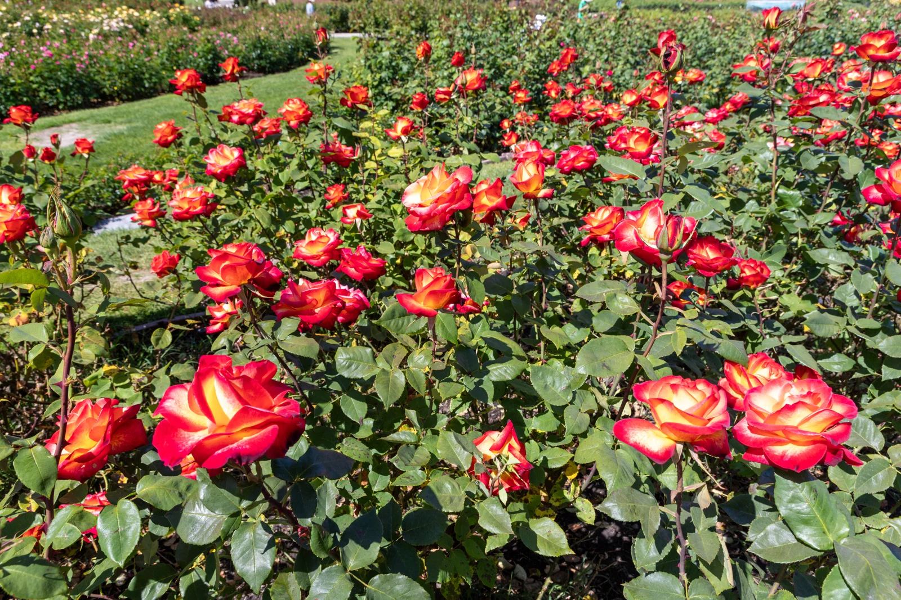
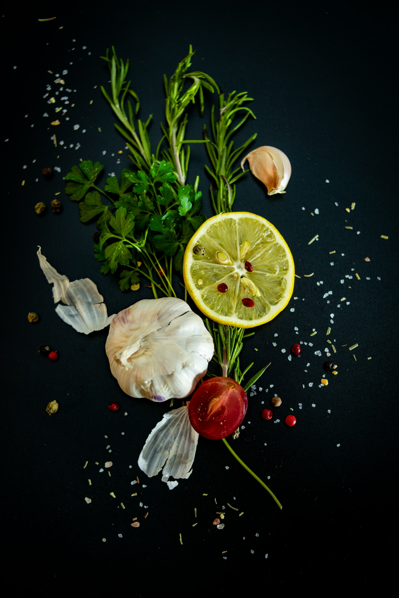

DISPENSARYSponsored
Purple Lotus Cannabis Dispensary
Cannabis dispensary with Commercial Street and downtown San Jose locations.
NOSE NOTES / YOUR SCENT SIGNATURE
Pick up to three aromas you love. Discover the compounds behind the vocabulary and make a scent card to share.
Aroma preferences only. Your signature does not predict cannabis effects.
Choose up to three aroma families to make your own card.
Cannabis dispensary with Commercial Street and downtown San Jose locations.
Coffee and tea in a former gas station at Fifth and Jackson in Japantown.
Specialty coffee and espresso drinks in San Jose’s SoFA District.
Farm-to-table Mexican cooking on The Alameda in San Jose.
The aroma library
Eight compound profiles. Follow an aroma, then check the actual batch.
No matching compounds. Clear an aroma to explore more.
TRAIN YOUR NOSE / SAN JOSE EDITION
Start with something familiar. A garden. Fresh herbs. A bright citrus peel. San Jose gives your aroma vocabulary a place to begin, before you ever look at a terpene panel.
Explore the San Jose scent notebook ↗
San Jose’s Municipal Rose Garden is devoted to roses. Notice how one bloom can smell different from another. “Floral” is a useful beginning, not a complete description or a laboratory result.
About this place ↗
A familiar neighborhood can bring back food, tea, wood, or spice memories. Use your own associations to describe an aroma. The photograph marks a place, not a claim about what you will smell there.
About this place ↗
Food vocabulary gives you a useful starting point: citrus zest, pepper, herbs, toasted notes. Keep the words that fit your experience, then explore those families in the scent-signature tool.
About this place ↗A sensory exercise, not a chemical analysis. A photograph or familiar aroma cannot verify a terpene or predict cannabis effects. Photo credits.
FROM SCENT TO SPREADSHEET
Use both. Convert mg/g to percent, compare the compounds you entered, and learn what a missing result really means.
Try the lab-report converterSame mass fraction. Different notation.

Familiar aromas, better questions
An aroma preference can help you describe what you enjoy. It cannot predict a medical benefit or a particular high. Our explorer connects scent vocabulary with chemical references and practical questions for your next San Jose dispensary visit.
Learn how to use aroma ↗A little knowledge goes a long way
Lab-report literacy
A practical guide to percentages, mg/g, batch IDs and missing results.
Read the guide ↗Aroma fundamentals
How to use scent preferences without turning them into medical predictions.
Read the guide ↗Take it to the counter
Turn an aroma preference into specific questions about a real product.
Read the guide ↗Worked example
An imaginary lab panel shows how units, missing values and totals fit together.
Read the guide ↗Sensory field notes
Use everyday scent references to make a more precise description without inventing an effects score.
Read the guide ↗Better interpretations
Learn where useful chemical information ends and an unsupported promise begins.
Read the guide ↗No. This tool organizes aroma descriptions and chemical reference data. It does not predict your response or recommend a treatment.
Molecular formula and molecular weight are fetched from the identified PubChem compound records. Aroma categories are editorial descriptors and are labeled separately.
Bring your preferred aroma names and ask for a current batch terpene panel. We do not present unverified strain profiles or a pretend live inventory match.
The 60-second knowledge check
Five quick questions. Learn something useful, then challenge a friend.
The useful little dictionary
Milligrams per gram. Divide by ten to express the same mass fraction as percent.
Parts per hundred. One percent equals 10 mg/g.
An editorial scent category used here to navigate compound profiles.
A compound sharing a molecular formula with another but having a different arrangement.
The set of terpene measurements included in a particular report.
The sum of only the numeric values you put into our converter.
Often used for not detected. Consult the report’s own definition and reporting limits.
Limit of quantification. Consult the laboratory’s methods and report legend.
A compound identifier in the public PubChem database.
Your selected aroma preferences. It does not predict effects or prescribe a product.
No definitions match. Try a shorter word.
ABOUT NOSE NOTES
Stories, useful tools, and a point of view on San Jose. Meet the writers and explore the journal.
THE JOURNAL
A San Jose journal of aroma, appetite, and very specific taste.
Read the journal ↗